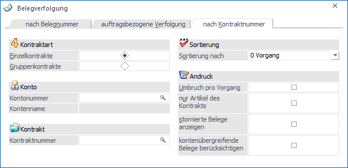
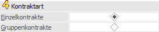
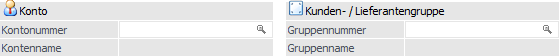
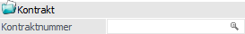
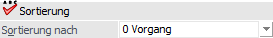
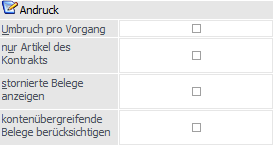

In dem Register "nach Kontraktnummer" werden alle Belege, welche auf dem gewählten Kontrakt beruhen, angezeigt.
Hinweis
Das Register steht nur zur Verfügung, wenn eine Lizenz für die Kontraktverwaltung vorliegt.

Es stehen folgende Selektionskriterien und Einstellungen zur Verfügung, wobei die Hinterlegungen in den Bereichen "Sortierung" und "Andruck" benutzerspezifisch gespeichert werden:
Kontraktart

Ø Kontraktart
An dieser Stelle kann definiert werden, welche Art von Kontrakt ausgewertet werden soll.
ü Einzelkontrakt
Es kann in den
nachfolgenden Feldern auf einen Kontrakt für einen Kunden oder einen Lieferanten
selektiert werden.
ü Gruppenkontrakt
Es kann in den
nachfolgenden Feldern auf einen Kontrakt für eine Kunden- oder Lieferantengruppe
selektiert werden
Konto / Gruppe

Ø Kontonummer / Gruppennummer
Entsprechend der "Kontraktart" kann an dieser Stelle auf einen Kunden / Lieferanten bzw. eine Kunden- / Lieferantengruppe eingegrenzt werden.
Hinweis
Die Hinterlegung an dieser Stelle dient zur Vorbelegung des "Belege - Matchcode", welcher über das Eingabefeld "Kontraktnummer" geöffnet werden kann. Bei der Auswahl eines Kontrakt wird das Feld automatisch mit den Daten des Kontrakts befüllt.
Ø Kontenname / Gruppenname
Hier wird der Name des gewählten Kunden / Lieferanten bzw. der gewählten Kunden- / Lieferantengruppe angezeigt.
Kontrakt

Ø Kontraktnummer
An dieser Stelle wird die Kontraktnummer hinterlegt, welche ausgewertet werden soll. Auf der Auswertung werden der Kontrakt, alle dazugehörigen Belege und eine Kontraktübersicht ausgewiesen.
Hinweis
Bei der Auswertung eines Gruppenkontrakts werden die zugehörigen Belege rein auf Grundlage der Kontraktnummer ermittelt. D.h. sollten doppelte Gruppenkontraktnummern vorhanden sein, so würden auch die Belege der anderen gleichlautenden Gruppenkontrakte dargestellt werden.
Sortierung

Ø Sortierung nach
An dieser Stelle kann die Sortierung der Belege definiert werden, wobei auf der Auswertung zuerst immer der Kontrakt und nach den Belegen eine Kontraktübersicht ausgegeben wird. Folgende Varianten stehen zur Verfügung:
ü 0 - Vorgang
Die Belege des
Kontrakts werden pro zusammenhängenden Vorgang sortiert ausgegeben. D.h. dass
die Belege, welche aufeinander aufbauen (z.B. Auftrag wurde in einen
Lieferschein gewandelt) nacheinander ausgegeben werden.
Die Reihenfolge der
einzelnen Vorgänge wird hierbei anhand der Belegstufe ermittelt. D.h. es werden
zunächst die Vorgänge, welche mit der Belegstufe "1 - Angebot / 5 - Anfrage"
beginnen (nach der Angebotsnummer sortiert), ausgegeben. Anschließend werden
Vorgänge aufgeführt, welche mit der Belegstufe "2 - Auftrag / 6 - Bestellungen"
beginnen, etc.
ü 1 - Belegstufe
Die Belege des
Kontrakts werden gemäß ihrer Belegstufe sortiert ausgegeben.
Achtung
Lieferscheine die bereits in eine Faktura gewandelt wurden, werden bei dieser Sortierung nicht berücksichtigt.
Beispiel
Für einen Kundenkontrakt wurden folgende Belege erfasst:
ü Auftrag "AB1" - gewandelt in Lieferschein "LS1"
ü Angebot "AN1" - gewandelt in Auftrag "AB2" - gewandelt in Lieferschein "LS3"
ü Auftrag "AB3" - gewandelt in Lieferschein "LS2" - gewandelt in Faktura "FA1"
Je nach Sortierungsoption wird die Auswertung wie folgt erstellt:
ü Option "0 - Vorgang"
Nach dem
Kontrakt wird der Beleg "AN1", gefolgt von den Belegen "AB2" und "LS3",
ausgegeben. Damit ist der erste Vorgang abgeschlossen und es wird mit dem
nächsten Vorgang (beginnend mit Auftrag "AB1") begonnen. Nach der Ausgabe aller
Vorgänge wird zum Abschluss eine Kontraktübersicht ausgegeben.
ü Option "1 - Belegstufe
Nach dem
Kontrakt wird die Belegstufe "1 - Angebot" mit Beleg "AN1" ausgegeben. Danach
folgt dann die Belegstufe "2 - Auftrag" (Belege "AB1", "AB2" und "AB3"). Nachdem
alle Belege der Belegstufe gedruckt wurden, wird mit der Ausgabe der Belegstufe
"3 - Lieferschein" begonnen, wobei der bereits gewandelte Beleg "LS2" nicht
ausgegeben wird. Anschließend folgt die Belegstufe "4 - Faktura" (Beleg "FA1").
Nach der Ausgabe aller Belegstufen wird zum Abschluss eine Kontraktübersicht
ausgegeben.
Andruck

Ø Umbruch pro Vorgang
Wenn die Auswertung mit der Sortierung "0 - Vorgang" ausgegeben wird, kann mit Hilfe dieser Option definiert werden, dass pro Vorgang ein Seitenumbruch erfolgen soll.
Ø nur Artikel des Kontrakts
Mit Hilfe dieser Option werden bei den Belegen nur jene Artikel aufgeführt, welche auf Grundlage des gewählten Kontrakts erfasst wurden.
Hinweis
Artikel, welche nicht aus dem selektierten Kontrakt stammen, werden mit einem "+" gekennzeichnet.
Ø stornierte Belege anzeigen
Wird die Option "stornierte Belege anzeigen" aktiviert, dann werden auch die Belege angezeigt, welche bereits storniert wurden.
Beispiel
Auf Grundlage eines Kontrakts wurde die Belege "Angebot", "Auftrag", "Lieferschein" und "Faktura" erfasst. Anschließend wurde die Faktura wieder storniert.
Durch Aktivierung der Option "stornierte Belege anzeigen" wird auch die Faktura in der Auswertung angezeigt.
Ø kontenübergreifende Belege berücksichtigen
Grundsätzlich werden bei der Betrachtung eines Einzelkontrakts nur jene Belege berücksichtigt, welche auf das Konto des Kontrakts erfasst wurden.
Handelt es sich bei dem Kontrakt um einen kontenübergreifenden Einzelkontrakt, dann kann durch Aktivierung der Option "kontenübergreifende Belege berücksichtigen" diese Einschränkung aufgehoben werden, d.h. es werden auch die Belege von jenen Konten ausgegeben, welche gemäß Kontrakt ebenfalls Zugriff besitzen.
Hinweis 1
Bei der Kontraktart "Gruppenkontrakte" wird diese Option nicht berücksichtigt, da automatisch alle Konten der jeweiligen Gruppe berücksichtigt werden.
Des Weiteren werden in der Kontraktübersicht immer alle Abbuchungen betrachten und ausgegeben. Hierbei ist es irrelevant, über welches Konto die Abbuchung erfolgt ist.
Hinweis 2
Diese Option steht nur zur Verfügung, wenn in den FAKT-Parametern (WinLine START - Parameter - Applikations-Parameter - FAKT-Parameter - Belege - Kontrakte) die Einstellung "Kontenübergreifende Kontrakte erlauben" aktiviert wurde.